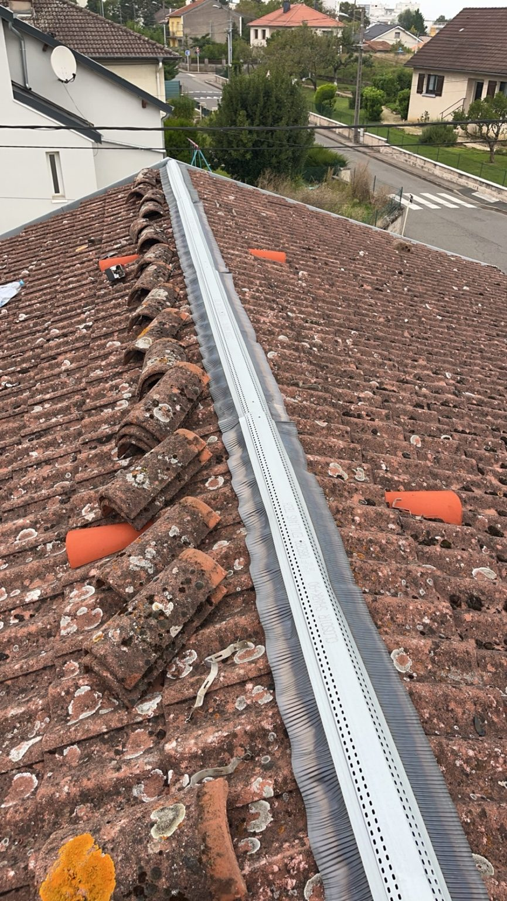

Comment obtenir un devis toiture ?
Vous pouvez utiliser le formulaire de devis, appeler directement ou envoyer des photos par WhatsApp pour présenter votre projet.
Le faîtage et les arêtiers sont exposés au vent et aux intempéries. Un élément déplacé, fissuré ou mal fixé peut favoriser les infiltrations.
Faîtière déplacée, mortier fissuré, closoir relevé, tuiles cassées ou infiltration après pluie et vent sont des signes à faire contrôler.
Selon l'état, une réparation localisée peut suffire. Si plusieurs éléments sont dégradés, une reprise plus complète du faîtage peut être préférable.


Décrivez votre besoin depuis le formulaire de l'accueil ou appelez directement J2B Couverture.
Vous pouvez utiliser le formulaire de devis, appeler directement ou envoyer des photos par WhatsApp pour présenter votre projet.
Oui, notamment à Toul, Nancy, Écrouves, Dommartin-lès-Toul, Gondreville, Liverdun et dans les communes alentour.
J2B Couverture intervient pour les projets de faîtage et arêtiers ainsi que pour les travaux complémentaires de couverture, réparation et entretien de toiture en Meurthe-et-Moselle.